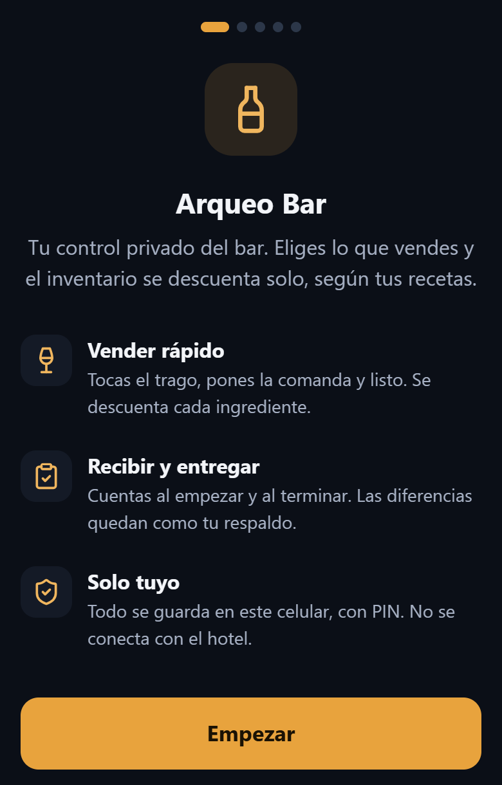

Arqueo Bar
App Android para quien atiende el bar de un hotel. Toca el trago vendido y el inventario se descuenta según la receta. Al empezar y terminar el turno cuenta lo que recibe y entrega, y las diferencias quedan de respaldo.
Android, Kotlin y JavaScript. Funciona sin internet.